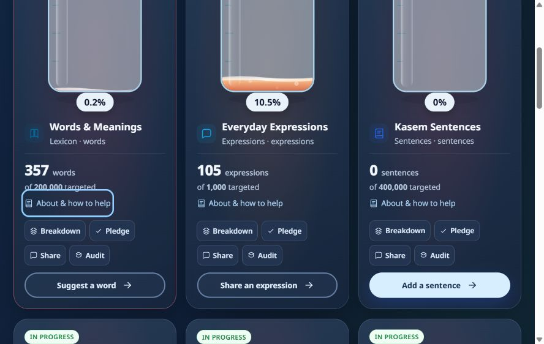
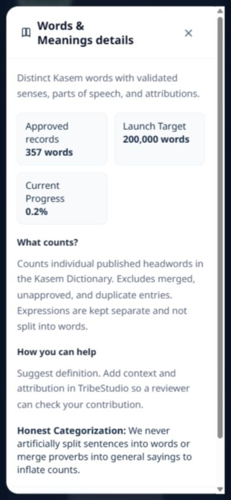

The public progress page now gives our community's work the whole screen. The website header and footer step away on this page, leaving more space for the vessels, their contribution counts, and the actions that help fill them.
Availability: This redesign is being prepared for the public website on 4 October 2026. Deployment and live verification are pending. This article has not been published.

Liquid changes through red, yellow, blue, and green as a category moves toward its target. Fuller vessels also contain more bubbles, with larger bubbles adding to the sense of growth. Moving liquid and gentle surface effects make progress easier to spot.
The numbers remain the guide: colours and bubbles describe the same contribution progress as the count and percentage. Missing targets remain clearly marked, and visual liquid stays within the vessel even when a target is exceeded.
Long explanations move behind clearly labelled buttons. How it works explains the counts and targets, Launch pace opens category choices and available estimates, and Add your voice shows ways to contribute. Each vessel's About & how to help button opens its category details. Popup buttons replace dropdown menus, making the available options easier to see and tap.

You can pause the continuous animation. The page also respects your device's reduced-motion preference. Use Back to website to return to the main site. The planned launch window and any target-setting messages remain visible; this redesign does not announce a new launch date. Launch pace estimates appear only when a measured weekly rate is available.